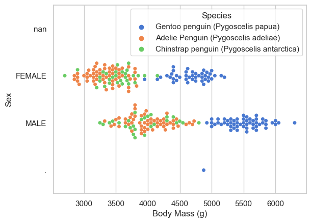

Implementation of different machine learning models to determine the smallest number of measurements necessary to determine the species of a penguin.
Published
March 10, 2023
The Penguin Dataset
Below is the Palmer Penguins data set collected by Dr. Kristen Gorman and the Palmer Station, Antarctica LTER. The data contains physiological measurements for a number of penguins from each of three species of penguin: chinstrap, gentoo, and adelie.
Code
import pandas as pdimport numpy as npfrom matplotlib import pyplot as plttrain_url ="https://raw.githubusercontent.com/middlebury-csci-0451/CSCI-0451/main/data/palmer-penguins/train.csv"train = pd.read_csv(train_url)train.head()
studyName
Sample Number
Species
Region
Island
Stage
Individual ID
Clutch Completion
Date Egg
Culmen Length (mm)
Culmen Depth (mm)
Flipper Length (mm)
Body Mass (g)
Sex
Delta 15 N (o/oo)
Delta 13 C (o/oo)
Comments
0
PAL0708
27
Gentoo penguin (Pygoscelis papua)
Anvers
Biscoe
Adult, 1 Egg Stage
N46A1
Yes
11/29/07
44.5
14.3
216.0
4100.0
NaN
7.96621
-25.69327
NaN
1
PAL0708
22
Gentoo penguin (Pygoscelis papua)
Anvers
Biscoe
Adult, 1 Egg Stage
N41A2
Yes
11/27/07
45.1
14.5
215.0
5000.0
FEMALE
7.63220
-25.46569
NaN
2
PAL0910
124
Adelie Penguin (Pygoscelis adeliae)
Anvers
Torgersen
Adult, 1 Egg Stage
N67A2
Yes
11/16/09
41.4
18.5
202.0
3875.0
MALE
9.59462
-25.42621
NaN
3
PAL0910
146
Adelie Penguin (Pygoscelis adeliae)
Anvers
Dream
Adult, 1 Egg Stage
N82A2
Yes
11/16/09
39.0
18.7
185.0
3650.0
MALE
9.22033
-26.03442
NaN
4
PAL0708
24
Chinstrap penguin (Pygoscelis antarctica)
Anvers
Dream
Adult, 1 Egg Stage
N85A2
No
11/28/07
50.6
19.4
193.0
3800.0
MALE
9.28153
-24.97134
NaN
Preparing our dataset
Our data frame has some columns we can’t use directly. Thus, we used the “one-hot encoding” to represent these features as binary columns.
The displayed figure below shows the general relationship between sex and body mass (g) in each of the 3 penguin species. By looking at the figure, it’s clear that female penguins tend to have a lower body mass than the male penguins. In addition, the Gentoo penguins have a larger overall body mass than the other 2 species, weighing between 4000 to 6000 grams. Both the Adelie and Chinstap species weigh between 3000 to 4500 grams.
Code
import seaborn as snssns.set_theme(style="whitegrid", palette="muted")# Draw a categorical scatterplot to show each observationax = sns.swarmplot(data=train, x="Body Mass (g)", y="Sex", hue="Species")ylab = ax.set(ylabel="Sex")

Comparing flipper lengths of the 3 species
The table below shows clear differences in flipper lengths between the 3 species. Gentoo penguins have the largest overall flipper length at 217.65mm. The Chinstrap penguins’ overall flipper length comes in at 195.46mm. Adelie penguins have the smallest overall flipper length of the 3 species, at 189.97mm. However, it’s important to note that there was much less data recorded for the Chinstrap species as compared to the other 2 species.
Below, we perform an exhaustive search of all the features contained in the dataset to find the 3 best features that will achieve 100% accuracy. The models that we will implement are Logistic Regression, Random Forest Classifier and Decision Tree Classifier, all of which are taken from sklearn.
Code
#some parts of the code was provided by Professor Philfrom itertools import combinationsfrom sklearn.linear_model import LogisticRegressionfrom sklearn.ensemble import RandomForestClassifierfrom sklearn.tree import DecisionTreeClassifierimport warningswarnings.filterwarnings("ignore")all_qual_cols = ["Clutch Completion", "Sex", "Island"]all_quant_cols = ['Culmen Length (mm)', 'Culmen Depth (mm)', 'Flipper Length (mm)', 'Body Mass (g)']best_score_LR =0#highest accuracy reached with LR modelbest_score_RF =0#highest accuracy reached with RF modelbest_score_DT =0#highest accuracy reached with DT modelfor qual in all_qual_cols: qual_cols = [col for col in X_train.columns if qual in col ]for pair in combinations(all_quant_cols, 2): cols =list(pair) + qual_cols # train on logistic regression LR = LogisticRegression() LR.fit(X_train[cols], y_train)# keeping the list of columns for the model that has the best score if (LR.score(X_train[cols], y_train) > best_score_LR): best_cols_LR = cols best_score_LR = LR.score(X_train[cols], y_train) best_LR = LR# train on random forest classifier RF = RandomForestClassifier(max_depth=3, random_state=0) RF.fit(X_train[cols], y_train)# keeping the list of columns for the model that has the best score if (RF.score(X_train[cols], y_train) > best_score_RF): best_cols_RF = cols best_score_RF = RF.score(X_train[cols], y_train) best_RF = RF# train on decision tree classifier DT = DecisionTreeClassifier(max_depth=3) DT.fit(X_train[cols], y_train)# keeping the list of columns for the model that has the best score if (DT.score(X_train[cols], y_train) > best_score_DT): best_cols_DT = cols best_score_DT = DT.score(X_train[cols], y_train) best_DT = DTprint("Best 3 columns for LR: "+str(best_cols_LR))print("Training Accuracy for LR: "+str(best_score_LR))print("\nBest 3 columns for RF: "+str(best_cols_RF))print("Training Accuracy for RF: "+str(best_score_RF))print("\nBest 3 columns for DT: "+str(best_cols_DT))print("Training Accuracy for DT: "+str(best_score_DT))
Best 3 columns for LR: ['Culmen Length (mm)', 'Culmen Depth (mm)', 'Island_Biscoe', 'Island_Dream', 'Island_Torgersen']
Training Accuracy for LR: 1.0
Best 3 columns for RF: ['Culmen Length (mm)', 'Flipper Length (mm)', 'Island_Biscoe', 'Island_Dream', 'Island_Torgersen']
Training Accuracy for RF: 0.9921875
Best 3 columns for DT: ['Culmen Length (mm)', 'Culmen Depth (mm)', 'Island_Biscoe', 'Island_Dream', 'Island_Torgersen']
Training Accuracy for DT: 0.9921875
Cross-Validation
We will use cross-validation to get a sense for what max depth we should set for the Decision Tree Classifier.
Code
from sklearn.model_selection import cross_val_scorecv_scores = cross_val_score(best_DT, X_train[best_cols_DT], y_train, cv=5)cv_scores